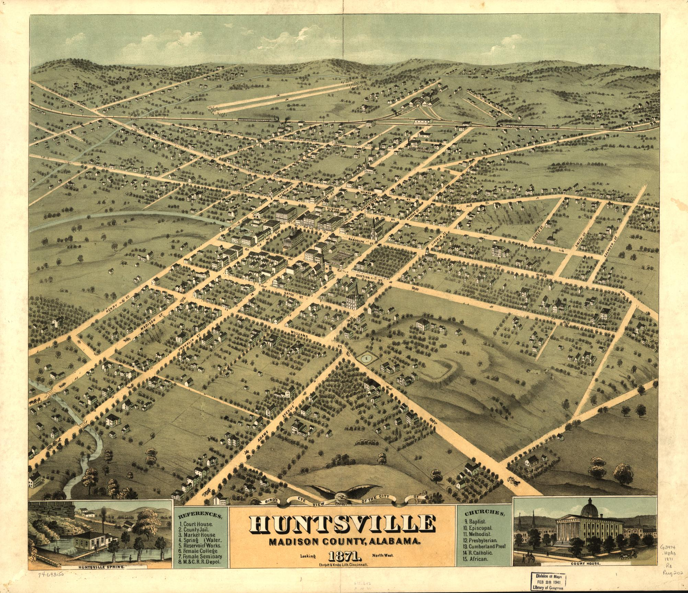

In 1805, Revolutionary War veteran John Hunt built a cabin above a large natural spring in what was then Cherokee and Chickasaw territory. The Chickasaw ceded their claim to the land in an 1805 treaty, the Cherokee ceded theirs in 1806, and the tract became Madison County in 1808. The following year, cotton planter LeRoy Pope and a group of investors known as the Broad River Group bought up much of the land around the spring, briefly naming the settlement Twickenham after a relative's English estate. In 1811, the Alabama legislature renamed the town Huntsville, honoring the man who had settled it first.
Eight years later, Huntsville became the birthplace of Alabama itself. On July 5, 1819, forty-four delegates gathered there to write the state's first constitution, signing it on August 2. Alabama entered the Union as the 22nd state that December, with Huntsville serving as its first seat of government, before the permanent capital moved on to Cahawba in 1820 - the same river town at the heart of our own Cahaba River Colony's story. The very room where that constitution was written still stands today, rebuilt on its original foundation at Alabama Constitution Village in downtown Huntsville, open for tours as part of the EarlyWorks Museums.
In the early 1600s, the Pilgrims were a tiny community in a place that seemed almost immeasurable - a few hundred people surrounded by a continent that stretched farther than any map they carried. Two hundred years later, the Cherokee and Chickasaw of the Tennessee Valley lived in a world that carried a similar sense of scale, their towns modest in size within a region growing quickly around them as new settlers, new counties, and new civic centers began to multiply. Chartered on October 21, 1991, our own Tennessee Valley Colony carries that same thread forward: a small circle of members finding its place inside something much larger. No documented Mayflower ancestry has turned up yet for Huntsville's own founders - John Hunt or LeRoy Pope among them - but if any of our members know more of that story, we'd love to hear it and add it here.
